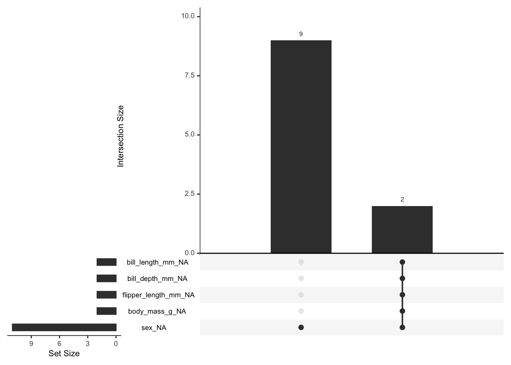
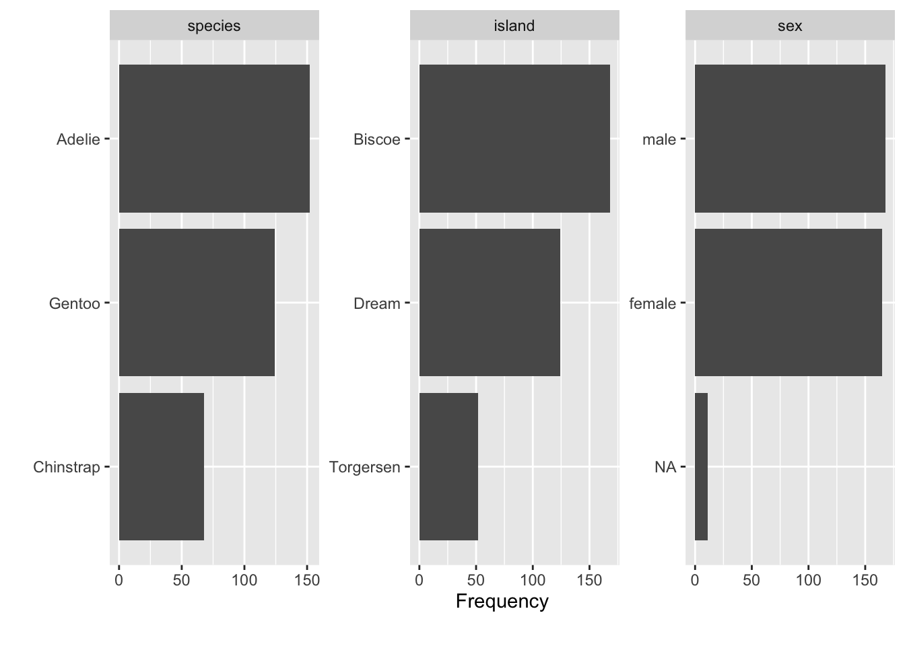
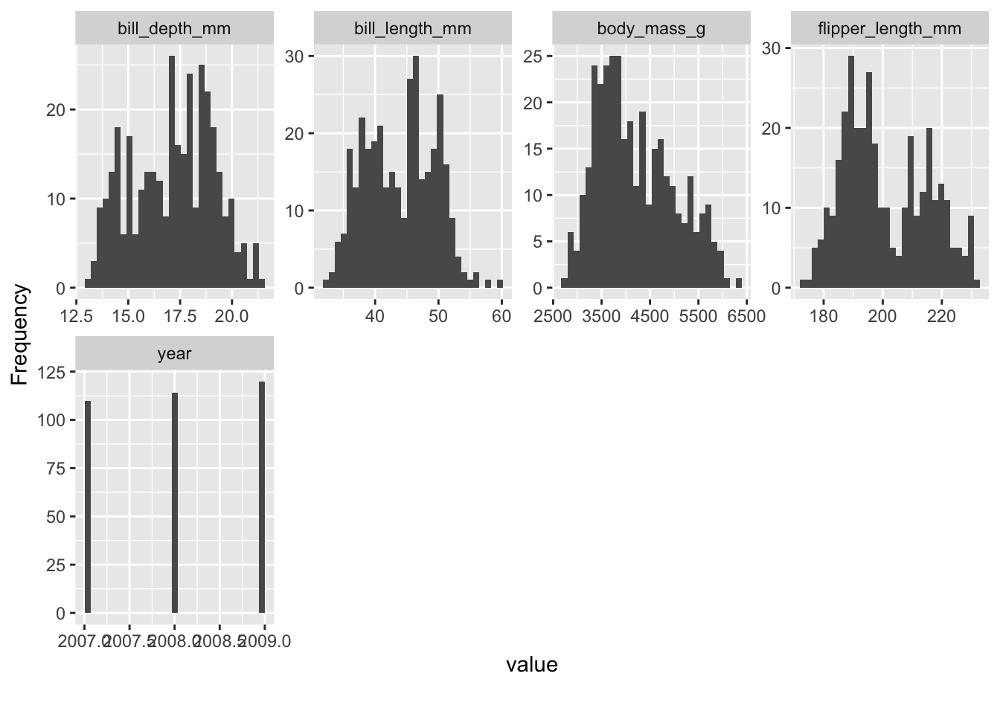
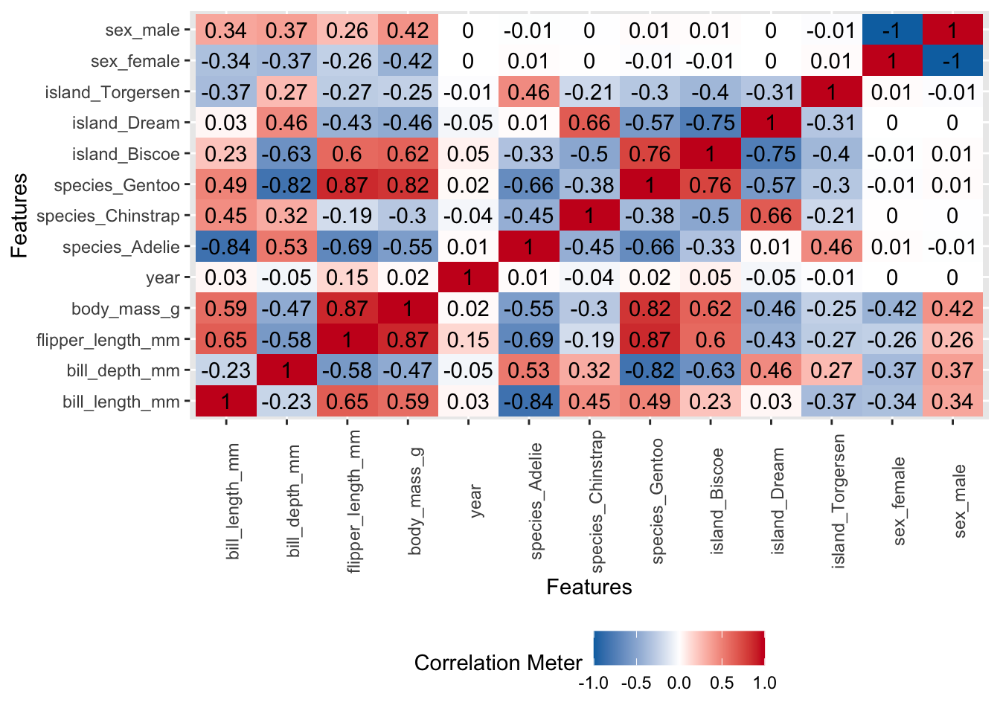

library(tidyverse)
library(palmerpenguins)
library(skimr)
library(DataExplorer)
library(naniar)
library(rcompanion) # for cramerV function7 Exploratory data analysis
8 EDA
John Tukey, often regarded as the father of exploratory data analysis (EDA), introduced the concept in his seminal work, Exploratory Data Analysis (Tukey, 1977). EDA is closely related to data cleaning but serves a distinct purpose. While data cleaning involves preparing the data by handling missing values, correcting errors, and ensuring consistency, EDA is about understanding the data’s underlying structure through visual and statistical methods. EDA helps identify further cleaning needs by revealing patterns, anomalies, and relationships within the data. To elucidate EDA, I’m borrowing a paragraph from Jebb et al:
Putting all these perspectives together, EDA is best described as an overarching analytic attitude characterized as “detective work designed to reveal the structure or patterns in the data” (Haig, 2005, p. 375; Tukey, 1980). Put simply, when confronted with a data set, EDA tries to answer the simple question, “What is going on here?” (Behrens, 1997, p. 132) and aims to build a rich mental model of the data. The goal is simply to understand the structure of the data, and this understanding goes on to serve all kinds of analytic goals: indicating whether statistical assumptions are met, identifying outliers, suggesting future hypotheses, uncovering empirical relationships, identifying potential transformations, and suggesting appropriate models for the data (Behrens, 1997). In this way, EDA is the statistical embodiment of inductive research; through its visualization and quantitative techniques, EDA comprises the research practices that allow researchers to detect empirical phenomena.
In simple terms EDA is a way to assess the quality of your data. it is a prerequisite of any analysis. It is also the step where you notice if parts of your data needs further cleaning.
EDA could be performed solely with the tidyverse, see R for Data Science. however for simplicity we will utilize several R packages to make the process easier.
Below is an exaple on how to conduct an EDA to understand your data better.
data("penguins")8.0.1
For a first look at the dataset use skimr from the skim package. Here you will notice what class a variable is, how many missing there are and also some descriptive information.
skimr::skim(penguins)| Name | penguins |
| Number of rows | 344 |
| Number of columns | 8 |
| _______________________ | |
| Column type frequency: | |
| factor | 3 |
| numeric | 5 |
| ________________________ | |
| Group variables | None |
Variable type: factor
| skim_variable | n_missing | complete_rate | ordered | n_unique | top_counts |
|---|---|---|---|---|---|
| species | 0 | 1.00 | FALSE | 3 | Ade: 152, Gen: 124, Chi: 68 |
| island | 0 | 1.00 | FALSE | 3 | Bis: 168, Dre: 124, Tor: 52 |
| sex | 11 | 0.97 | FALSE | 2 | mal: 168, fem: 165 |
Variable type: numeric
| skim_variable | n_missing | complete_rate | mean | sd | p0 | p25 | p50 | p75 | p100 | hist |
|---|---|---|---|---|---|---|---|---|---|---|
| bill_length_mm | 2 | 0.99 | 43.92 | 5.46 | 32.1 | 39.23 | 44.45 | 48.5 | 59.6 | ▃▇▇▆▁ |
| bill_depth_mm | 2 | 0.99 | 17.15 | 1.97 | 13.1 | 15.60 | 17.30 | 18.7 | 21.5 | ▅▅▇▇▂ |
| flipper_length_mm | 2 | 0.99 | 200.92 | 14.06 | 172.0 | 190.00 | 197.00 | 213.0 | 231.0 | ▂▇▃▅▂ |
| body_mass_g | 2 | 0.99 | 4201.75 | 801.95 | 2700.0 | 3550.00 | 4050.00 | 4750.0 | 6300.0 | ▃▇▆▃▂ |
| year | 0 | 1.00 | 2008.03 | 0.82 | 2007.0 | 2007.00 | 2008.00 | 2009.0 | 2009.0 | ▇▁▇▁▇ |
To understand if there is a pattern in the missingness you could use the gg_miss_upset()function from the package naniar.
gg_miss_upset(penguins)
plot_bar will plot your character and factor variables to understand their distribution.
plot_bar(penguins)
plot_histogram will plot your numeric variables to understand their distribution.
plot_histogram(penguins)
To visualize correlation heatmap for numerical variables. na.omit() removes all rows with missing:
plot_correlation(na.omit(penguins), maxcat = 5L)
Function correlation between all variables cannot handle date variables
# Calculate a pairwise association between all variables in a data-frame. In particular nominal vs nominal with Chi-square, numeric vs numeric with Pearson correlation, and nominal vs numeric with ANOVA. Does not handle data columns.
# Adopted from https://stackoverflow.com/a/52557631/590437
mixed_assoc = function(df, cor_method="spearman", adjust_cramersv_bias=TRUE){
df_comb = expand.grid(names(df), names(df), stringsAsFactors = F) %>% set_names("X1", "X2")
is_nominal = function(x) class(x) %in% c("factor", "character")
# https://community.rstudio.com/t/why-is-purr-is-numeric-deprecated/3559
# https://github.com/r-lib/rlang/issues/781
is_numeric <- function(x) { is.integer(x) || is_double(x)}
f = function(xName,yName) {
x = pull(df, xName)
y = pull(df, yName)
result = if(is_nominal(x) && is_nominal(y)){
# use bias corrected cramersV as described in https://rdrr.io/cran/rcompanion/man/cramerV.html
cv = cramerV(as.character(x), as.character(y), bias.correct = adjust_cramersv_bias)
data.frame(xName, yName, assoc=cv, type="cramersV")
}else if(is_numeric(x) && is_numeric(y)){
correlation = cor(x, y, method=cor_method, use="complete.obs")
data.frame(xName, yName, assoc=correlation, type="correlation")
}else if(is_numeric(x) && is_nominal(y)){
# from https://stats.stackexchange.com/questions/119835/correlation-between-a-nominal-iv-and-a-continuous-dv-variable/124618#124618
r_squared = summary(lm(x ~ y))$r.squared
data.frame(xName, yName, assoc=sqrt(r_squared), type="anova")
}else if(is_nominal(x) && is_numeric(y)){
r_squared = summary(lm(y ~x))$r.squared
data.frame(xName, yName, assoc=sqrt(r_squared), type="anova")
}else {
warning(paste("unmatched column type combination: ", class(x), class(y)))
}
# finally add complete obs number and ratio to table
result %>% mutate(complete_obs_pairs=sum(!is.na(x) & !is.na(y)), complete_obs_ratio=complete_obs_pairs/length(x)) %>% rename(x=xName, y=yName)
}
# apply function to each variable combination
map2_df(df_comb$X1, df_comb$X2, f)
}
mx <- mixed_assoc(penguins)
mx| x | y | assoc | type | complete_obs_pairs | complete_obs_ratio | |
|---|---|---|---|---|---|---|
| Cramer V…1 | species | species | 1.0000000 | cramersV | 344 | 1.0000000 |
| Cramer V…2 | island | species | 0.6573000 | cramersV | 344 | 1.0000000 |
| …3 | bill_length_mm | species | 0.8413139 | anova | 342 | 0.9941860 |
| …4 | bill_depth_mm | species | 0.8244751 | anova | 342 | 0.9941860 |
| …5 | flipper_length_mm | species | 0.8821728 | anova | 342 | 0.9941860 |
| …6 | body_mass_g | species | 0.8183349 | anova | 342 | 0.9941860 |
| Cramer V…7 | sex | species | 0.0000000 | cramersV | 333 | 0.9680233 |
| …8 | year | species | 0.0511457 | anova | 344 | 1.0000000 |
| Cramer V…9 | species | island | 0.6573000 | cramersV | 344 | 1.0000000 |
| Cramer V…10 | island | island | 1.0000000 | cramersV | 344 | 1.0000000 |
| …11 | bill_length_mm | island | 0.3924674 | anova | 342 | 0.9941860 |
| …12 | bill_depth_mm | island | 0.6324403 | anova | 342 | 0.9941860 |
| …13 | flipper_length_mm | island | 0.6131781 | anova | 342 | 0.9941860 |
| …14 | body_mass_g | island | 0.6273573 | anova | 342 | 0.9941860 |
| Cramer V…15 | sex | island | 0.0000000 | cramersV | 333 | 0.9680233 |
| …16 | year | island | 0.0827530 | anova | 344 | 1.0000000 |
| …17 | species | bill_length_mm | 0.8413139 | anova | 342 | 0.9941860 |
| …18 | island | bill_length_mm | 0.3924674 | anova | 342 | 0.9941860 |
| …19 | bill_length_mm | bill_length_mm | 1.0000000 | correlation | 342 | 0.9941860 |
| …20 | bill_depth_mm | bill_length_mm | -0.2217492 | correlation | 342 | 0.9941860 |
| …21 | flipper_length_mm | bill_length_mm | 0.6727719 | correlation | 342 | 0.9941860 |
| …22 | body_mass_g | bill_length_mm | 0.5838003 | correlation | 342 | 0.9941860 |
| …23 | sex | bill_length_mm | 0.3440778 | anova | 333 | 0.9680233 |
| …24 | year | bill_length_mm | 0.0636023 | correlation | 342 | 0.9941860 |
| …25 | species | bill_depth_mm | 0.8244751 | anova | 342 | 0.9941860 |
| …26 | island | bill_depth_mm | 0.6324403 | anova | 342 | 0.9941860 |
| …27 | bill_length_mm | bill_depth_mm | -0.2217492 | correlation | 342 | 0.9941860 |
| …28 | bill_depth_mm | bill_depth_mm | 1.0000000 | correlation | 342 | 0.9941860 |
| …29 | flipper_length_mm | bill_depth_mm | -0.5232675 | correlation | 342 | 0.9941860 |
| …30 | body_mass_g | bill_depth_mm | -0.4323722 | correlation | 342 | 0.9941860 |
| …31 | sex | bill_depth_mm | 0.3726733 | anova | 333 | 0.9680233 |
| …32 | year | bill_depth_mm | -0.0690640 | correlation | 342 | 0.9941860 |
| …33 | species | flipper_length_mm | 0.8821728 | anova | 342 | 0.9941860 |
| …34 | island | flipper_length_mm | 0.6131781 | anova | 342 | 0.9941860 |
| …35 | bill_length_mm | flipper_length_mm | 0.6727719 | correlation | 342 | 0.9941860 |
| …36 | bill_depth_mm | flipper_length_mm | -0.5232675 | correlation | 342 | 0.9941860 |
| …37 | flipper_length_mm | flipper_length_mm | 1.0000000 | correlation | 342 | 0.9941860 |
| …38 | body_mass_g | flipper_length_mm | 0.8399741 | correlation | 342 | 0.9941860 |
| …39 | sex | flipper_length_mm | 0.2551689 | anova | 333 | 0.9680233 |
| …40 | year | flipper_length_mm | 0.1761374 | correlation | 342 | 0.9941860 |
| …41 | species | body_mass_g | 0.8183349 | anova | 342 | 0.9941860 |
| …42 | island | body_mass_g | 0.6273573 | anova | 342 | 0.9941860 |
| …43 | bill_length_mm | body_mass_g | 0.5838003 | correlation | 342 | 0.9941860 |
| …44 | bill_depth_mm | body_mass_g | -0.4323722 | correlation | 342 | 0.9941860 |
| …45 | flipper_length_mm | body_mass_g | 0.8399741 | correlation | 342 | 0.9941860 |
| …46 | body_mass_g | body_mass_g | 1.0000000 | correlation | 342 | 0.9941860 |
| …47 | sex | body_mass_g | 0.4249870 | anova | 333 | 0.9680233 |
| …48 | year | body_mass_g | 0.0405290 | correlation | 342 | 0.9941860 |
| Cramer V…49 | species | sex | 0.0000000 | cramersV | 333 | 0.9680233 |
| Cramer V…50 | island | sex | 0.0000000 | cramersV | 333 | 0.9680233 |
| …51 | bill_length_mm | sex | 0.3440778 | anova | 333 | 0.9680233 |
| …52 | bill_depth_mm | sex | 0.3726733 | anova | 333 | 0.9680233 |
| …53 | flipper_length_mm | sex | 0.2551689 | anova | 333 | 0.9680233 |
| …54 | body_mass_g | sex | 0.4249870 | anova | 333 | 0.9680233 |
| Cramer V…55 | sex | sex | 0.6935000 | cramersV | 333 | 0.9680233 |
| …56 | year | sex | 0.0004666 | anova | 333 | 0.9680233 |
| …57 | species | year | 0.0511457 | anova | 344 | 1.0000000 |
| …58 | island | year | 0.0827530 | anova | 344 | 1.0000000 |
| …59 | bill_length_mm | year | 0.0636023 | correlation | 342 | 0.9941860 |
| …60 | bill_depth_mm | year | -0.0690640 | correlation | 342 | 0.9941860 |
| …61 | flipper_length_mm | year | 0.1761374 | correlation | 342 | 0.9941860 |
| …62 | body_mass_g | year | 0.0405290 | correlation | 342 | 0.9941860 |
| …63 | sex | year | 0.0004666 | anova | 333 | 0.9680233 |
| …64 | year | year | 1.0000000 | correlation | 344 | 1.0000000 |